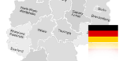

El basset hound es una raza de perro de caza de baja altura de cruz, cuerpo largo, patas cortas y fuertes, largas orejas y un sentido del olfato extremadamente desarrollado.
Generalmente se le usa para la caza de venados, liebres y zorros, entre otros animales como el faisán, ya que su caza es más especializada.
El origen de esta raza data de finales del siglo XIX, cuando un perro inglés fue cruzado con un Blood Hound.
Debido a su peculiar aspecto físico, es una raza popular y fácilmente reconocible para todo tipo de aficionados canófilos e incluso para personas con poco conocimiento de razas caninas, por lo que reúne muchos admiradores y aficionados a su cría, fundamentalmente en los países de origen anglosajón, países en los que tiene una gran aceptación.
A pesar de ser una raza versátil que se utiliza en los últimos tiempos para muchos propósitos, el Rottweiler es conocido principalmente como una de las más antiguas razas de pastoreo.
Dispone de una reunión de múltiples facetas y es un perro de protección de valores, es capaz de trabajar todo tipo de ganado en una variedad de condiciones.
El origen de la raza se encuentra probablemente en el Imperio Romano. En aquellos tiempos, la legión romana viajó con perros de trabajo de reunir el ganado necesario para alimentar al ejército. Estos perros se fueron mudando con los romanos más allá de las regiones alpinas, donde protegían a la gente y conducían el ganado. En la región de Rottweil (origen de su nombre) en Alemania, muy próxima a Stuttgart, estos ejemplares se cruzaron con los perros nativos, de los cuales surgió la mezcla actual.
Perro del siglo XIX. Las características de esta raza son su pequeño tamaño, su peso de unos 3,2 kg (7 Libras) y su pelo marrón y negro o gris.
El Yorkshire Terrier original era un perro de unos 6 a 7 kilos (13lb a 15lb aprox.) de peso, usado para cazar ratas y otros roedores. Son delicados con su alimentación, higiene y bienestar.
El Yorkshire terrier es el producto de la combinación de terrier escoceses e ingleses, que se produjo cuando una parte de la población de Escocia se vio desplazada debido a la Revolución industrial y se asentaron en Inglaterra